10.1 Σενάριο Προσθήκης Εφαρμογής με Καταχώρηση Διαδρομής
Το σενάριο αυτό παρουσιάζει τη διαδικασία προσθήκης μιας εφαρμογής στην εφαρμογή, συνοδευόμενη από την καταχώρηση της διαδρομής της. Η διαδικασία περιλαμβάνει την επιλογή, αποθήκευση και καταγραφή της διαδρομής, ώστε να είναι δυνατή η μελλοντική εκτέλεση ή διαχείριση της εφαρμογής από το σύστημα.
-
Βήμα 1: Ανοίγουμε το παράθυρο της διαχείρισης προγραμμάτων.

Σχήμα 29: Κεντρική οθόνη εφαρμογής. -
Βήμα 2: Επιλέγουμε το παράθυρο αναζήτησης εφαρμογής.
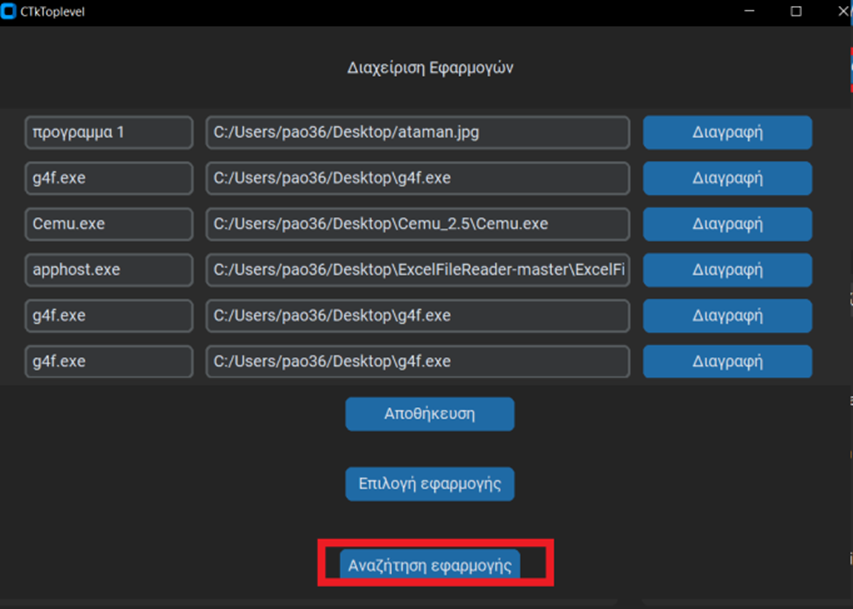
Σχήμα 30: Παράθυρο διαχείρισης προγραμμάτων. -
Βήμα 3: Επιλέγουμε τον επιθυμητό φάκελο στον οποίο θα πραγματοποιηθεί η αναζήτηση εφαρμογών.
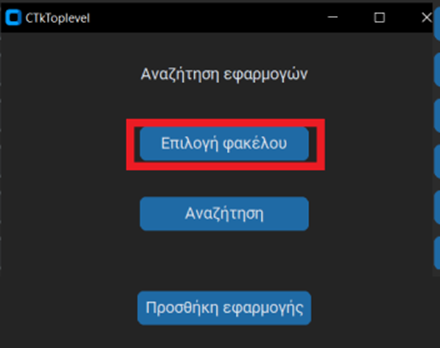
Σχήμα 31: Παράθυρο αναζήτησης εφαρμογής. -
Βήμα 4: Πατάμε το κουμπί «Αναζήτηση» για να ξεκινήσει η διαδικασία ανεύρεσης εφαρμογών.
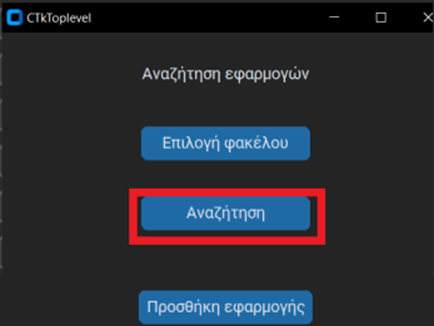
Σχήμα 32: Παράθυρο αναζήτησης εφαρμογής. -
Βήμα 5: Μετά την ολοκλήρωση της αναζήτησης, πατάμε το κουμπί «Προσθήκη εφαρμογής».
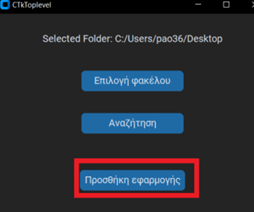
Σχήμα 33: Παράθυρο αναζήτησης εφαρμογής. -
Βήμα 6: Επιλέγουμε τις εφαρμογές που θέλουμε να προσθέσουμε και επιβεβαιώνουμε την επιλογή.
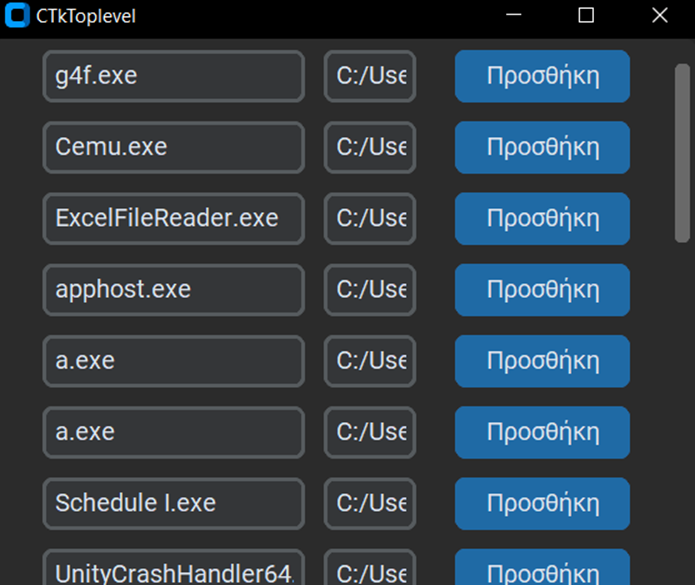
Σχήμα 34: Παράθυρο προσθήκης εφαρμογής. -
Βήμα 7: Για να αναγνωρίζει η εφαρμογή σωστά τις προστιθέμενες εφαρμογές, πηγαίνουμε στη
διαχείριση προγραμμάτων για μετονομασία.
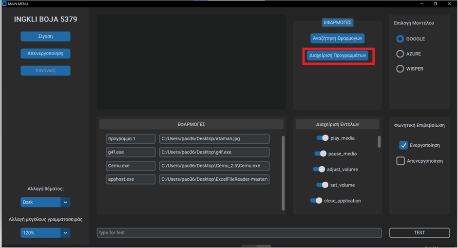
Σχήμα 35: Κεντρική οθόνη εφαρμογής. -
Βήμα 8: Αλλάζουμε το όνομα της εφαρμογής όπως θέλουμε να την αναγνωρίζει το σύστημα
και πατάμε «Αποθήκευση».
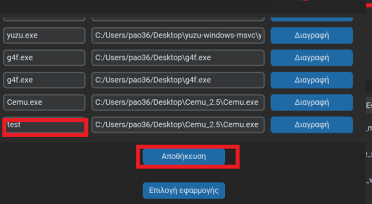
Σχήμα 36: Παράθυρο διαχείρισης προγραμμάτων. - Βήμα 9: Η εφαρμογή είναι πλέον έτοιμη και μπορεί να ανοιχτεί με την εντολή «Άνοιξε» ακολουθούμενη από το νέο όνομα της εφαρμογής.
10.2 Σενάριο Αφαίρεσης Εφαρμογής
Το σενάριο παρουσιάζει τη διαδικασία αφαίρεσης μιας εφαρμογής από το σύστημα, ώστε να μην εμφανίζεται πλέον στη λίστα των διαθέσιμων προγραμμάτων.
-
Βήμα 1: Ανοίγουμε το παράθυρο της διαχείρισης προγραμμάτων.

Σχήμα 37: Κεντρική οθόνη εφαρμογής. -
Βήμα 2: Ο χρήστης επιλέγει την εφαρμογή που επιθυμεί να αφαιρεθεί,
πατάει «Διαγραφή» και στη συνέχεια «Αποθήκευση».
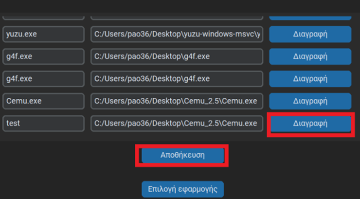
Σχήμα 38: Παράθυρο διαχείρισης προγραμμάτων.
10.3 Σενάριο Αλλαγής Φωνητικού Μοντέλου
Το σενάριο παρουσιάζει τη διαδικασία κατά την οποία ο χρήστης επιλέγει το επιθυμητό φωνητικό μοντέλο για την εφαρμογή. Η επιλογή του μοντέλου καθορίζει τις παραμέτρους αναγνώρισης φωνής που θα χρησιμοποιεί η εφαρμογή.
-
Βήμα 1: Ο χρήστης επιλέγει το επιθυμητό μοντέλο στο αντίστοιχο τμήμα
του αρχικού παραθύρου της εφαρμογής.
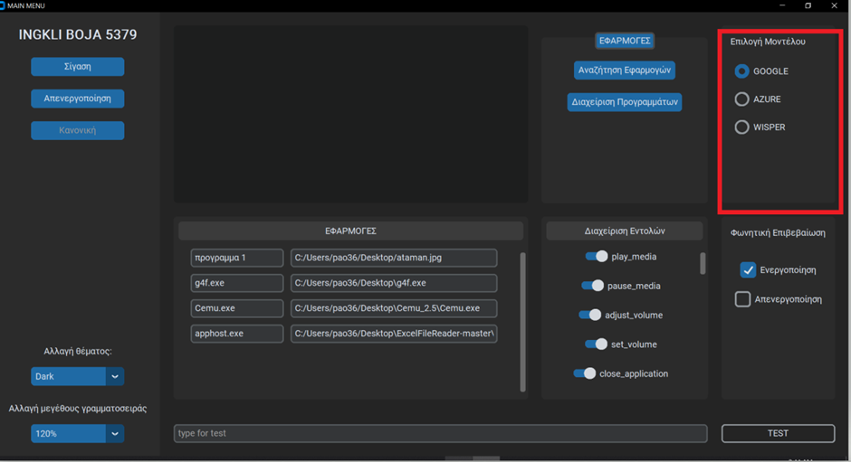
Σχήμα 39: Κεντρική οθόνη εφαρμογής.
10.4 Σενάριο Απενεργοποίησης Εντολών
Το σενάριο παρουσιάζει τη λειτουργία που επιτρέπει στον χρήστη να ενεργοποιήσει ή να απενεργοποιήσει επιθυμητές εντολές στην εφαρμογή. Μέσω αυτής της διαδικασίας, ο χρήστης καθορίζει ποιες εντολές θα είναι διαθέσιμες για εκτέλεση.
-
Βήμα 1: Ο χρήστης επιλέγει τις εντολές που θέλει να ενεργοποιήσει ή
να απενεργοποιήσει στο αντίστοιχο τμήμα του αρχικού παραθύρου της εφαρμογής.
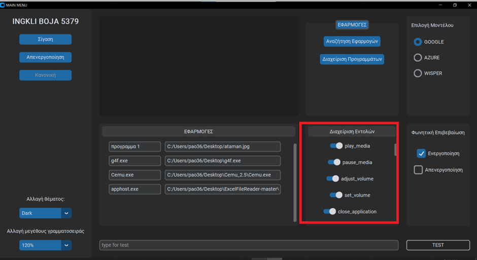
Σχήμα 40: Κεντρική οθόνη εφαρμογής.
10.5 Σενάριο Επιλογής Κατάστασης της Εφαρμογής
Το σενάριο παρουσιάζει τη λειτουργία μέσω της οποίας ο χρήστης επιλέγει την επιθυμητή κατάσταση λειτουργίας της εφαρμογής:
- Κανονική λειτουργία: η εφαρμογή εκτελεί κανονικά όλες τις εντολές.
- Λειτουργία σίγασης: η εφαρμογή δεν εκτελεί εντολές έως ότου δοθεί εντολή επανενεργοποίησης.
- Απενεργοποιημένη λειτουργία: η εφαρμογή δεν πραγματοποιεί αναγνώριση ή εκτέλεση εντολών.
-
Βήμα 1: Στο αντίστοιχο τμήμα της αρχικής οθόνης της εφαρμογής,
ο χρήστης επιλέγει την επιθυμητή κατάσταση λειτουργίας (κανονική, σίγαση ή απενεργοποιημένη).
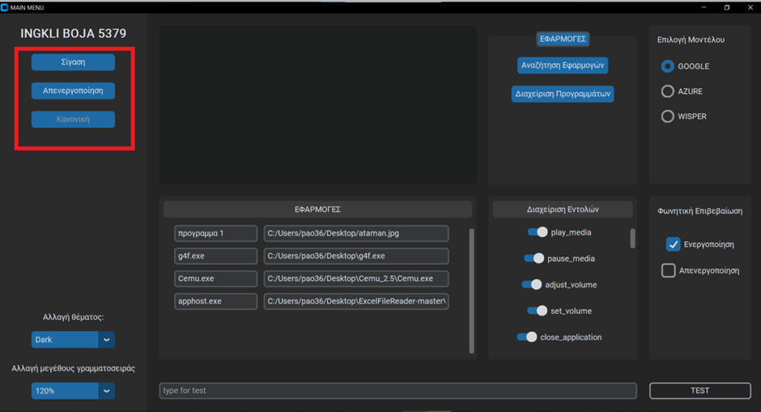
Σχήμα 41: Κεντρική οθόνη εφαρμογής.
10.6 Σενάριο Ενεργοποίησης ή Απενεργοποίησης Φωνητικής Επιβεβαίωσης
Το σενάριο παρουσιάζει τη διαδικασία μέσω της οποίας ο χρήστης μπορεί να ενεργοποιήσει ή να απενεργοποιήσει τη φωνητική επιβεβαίωση που παρέχεται μετά την εκτέλεση εντολών.
-
Βήμα 1: Ο χρήστης, μέσω του αντίστοιχου τμήματος της διεπαφής χρήστη,
επιλέγει αν η φωνητική επιβεβαίωση θα είναι ενεργοποιημένη ή απενεργοποιημένη.
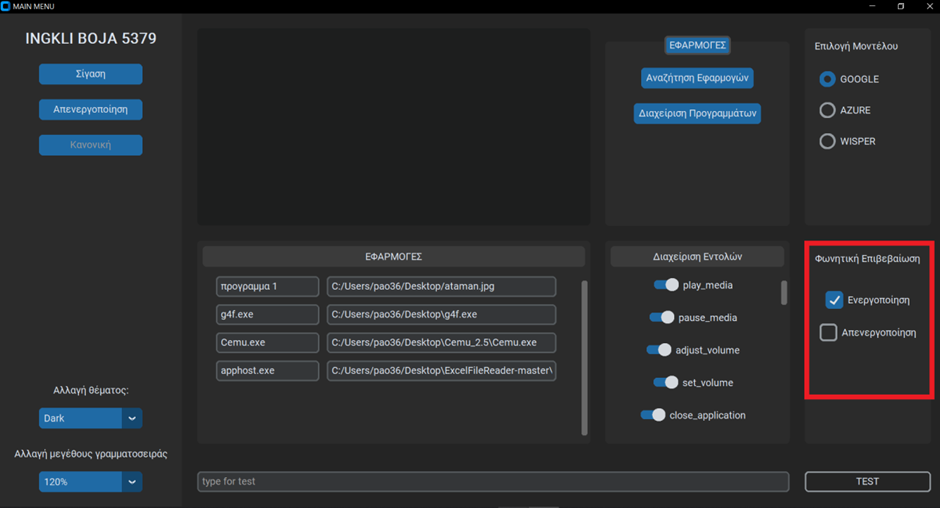
Σχήμα 42: Κεντρική οθόνη εφαρμογής.
10.7 Σενάριο Αλλαγής Θέματος Εφαρμογής
Το σενάριο παρουσιάζει τη λειτουργία μέσω της οποίας ο χρήστης μπορεί να επιλέξει το θέμα εμφάνισης της εφαρμογής (σκούρο ή λευκό).
- Βήμα 1: Ο χρήστης μεταβαίνει στο αντίστοιχο τμήμα ρυθμίσεων της εφαρμογής.
- Βήμα 2: Επιλέγει το επιθυμητό θέμα εμφάνισης (σκούρο ή λευκό).
-
Βήμα 3: Η εφαρμογή εφαρμόζει αυτόματα το νέο θέμα.
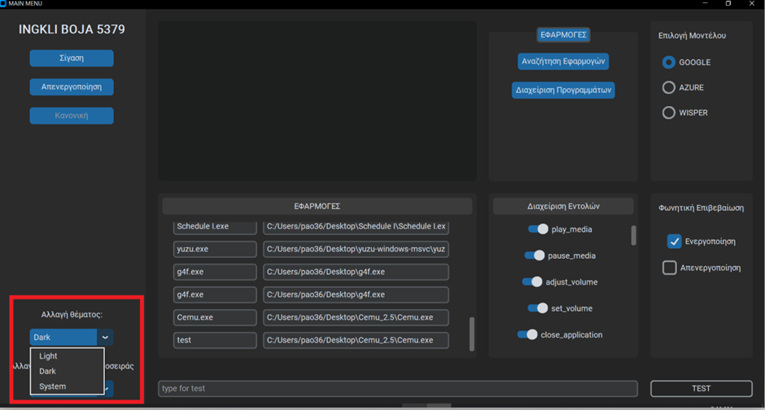
Σχήμα 43: Κεντρική οθόνη εφαρμογής.
10.8 Σενάριο Αλλαγής Γραμματοσειράς Εφαρμογής
Το σενάριο παρουσιάζει τη λειτουργία μέσω της οποίας ο χρήστης μπορεί να επιλέξει το επιθυμητό μέγεθος γραμματοσειράς της εφαρμογής, ώστε να βελτιώσει την αναγνωσιμότητα.
- Βήμα 1: Ο χρήστης μεταβαίνει στο αντίστοιχο τμήμα ρυθμίσεων της εφαρμογής.
- Βήμα 2: Επιλέγει από τον πίνακα επιλογών το επιθυμητό μέγεθος γραμματοσειράς.
-
Βήμα 3: Η εφαρμογή εφαρμόζει αυτόματα την αλλαγή σε όλα τα κείμενα και στοιχεία της διεπαφής.
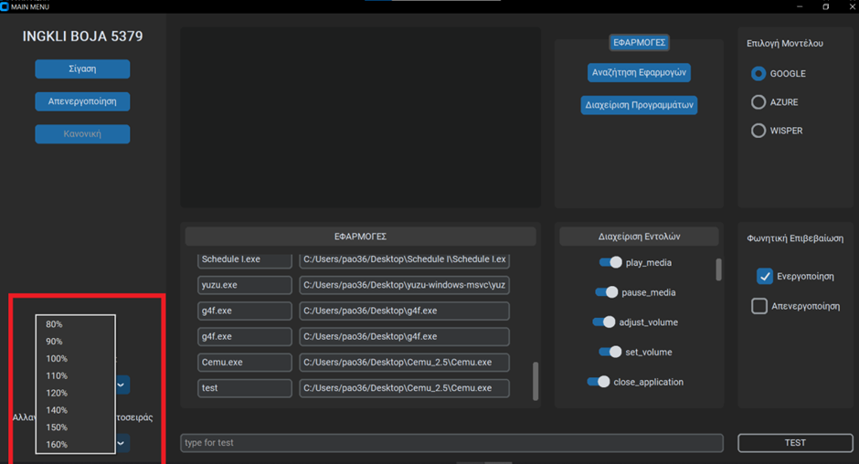
Σχήμα 44: Κεντρική οθόνη εφαρμογής.